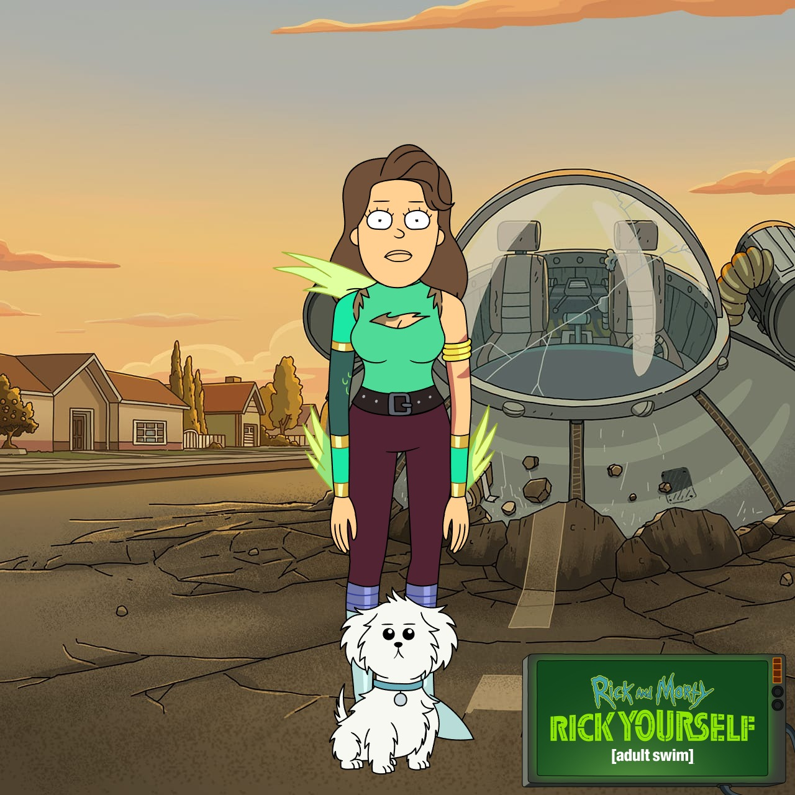

☆Lucélia Ribeiro

Em um universo paralelo, uma paulistana de gostos peculiares fez
uma mudança interdimensional no final de 2020, levando consigo
suas roupas, uma TV e suas adoráveis cachorras para São José-SC.
Com paixão por café, séries e animais, ela passou por várias
transformações profissionais, de secretária bilíngue a
administradora e, finalmente, a empreendedora adestradora
comportamentalista em 2015. Mas o destino lhe reservava
surpresas. No final de 2022, um portal reluzente a conduziu a um
novo território: o mundo da programação, especialmente o
front-end. Agora, ela encara os desafios desse reino
desconhecido, desvendando os segredos do código, como se fosse
parte de uma aventura ao lado de Rick e Morty em seus
experimentos interdimensionais. Prepare-se para uma jornada
repleta de reviravoltas e avanços tecnológicos neste episódio
inesquecível de "Rick and Morty: O Portal do Front-End".